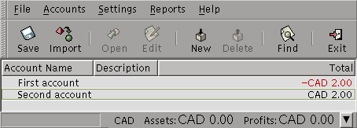

This package allows to generate files in the Quicken interchange format (QIF), which is a specially formatted text (ASCII) file that lets you to move transactions. Although it is only a tool, this package might help some people to understand the Quicken interchange format.
The transactions can be:
This package was first written to ease the translation from a custom PHP+MySQL application to GnuCash. A small Java program was written, which read the transactions stored in MySQL, and used this package to generate a QIF file and import it into GnuCash.
First example: From an account to an otherIn the following example QIF file, two accounts are consecutively defined, using the Sample1.java program. First, the "First Account" is defined, and a deposit is defined, where the money is taken from "Second Account". Then, the "Second Account" is defined, and a deposit is added to it, taking the money from "First Account":
!Account NFirst account ^ !Type:Bank D16/10/2001 T2.0 N1 MMemo1 PPayee1 L[Second account] ^ !Account NSecond account ^ !Type:Bank D16/10/2001 T4.0 N3 MMemo2 PPayee2 L[First account] ^ |
| Output of Sample1 |
Importing this file directly into GnuCash, we get (with release 1.4.11):

Second example: From a category to an account
The second example shows how to use account categories, where $2.00 are transferred from Second Account's SecondAccountCategory into First Account. The transaction is defined in the First Account as a deposit. The Sample2.java program illustrates this by generating the following QIF file:
!Account NFirst account ^ !Type:Bank D16/10/2001 T2.0 N1 MMemo1 PPayee1 LSecond account:SecondAccountCategory ^ |
| Output of Sample2 |
Using once again the importation tool of GnuCash, we see:

The importation then gives us the following:
I just don't know why the second account's category is recognized as an INCOME one...
A more concrete example: Expenses and incomes
The third example shows how to render two transactions: an income and an expense, both of which applies to a bank account: "My bank account". The Sample3.java program generates the following:
!Account NMy bank account ^ !Type:Bank D16/10/2001 T100.0 N1 PMy first paycheck LMy incomes ^ !Type:Bank D16/10/2001 T-10.0 N2 PMy first expense LMy expenses ^ |
| Output of Sample3 |
You can then import this file in GnuCash:

The final result is:

This is it. This package allowed me to do what I needed: get my data into GnuCash. Feel free to adapt it to your needs or improve it. This is free software, protected by the GPL licence.